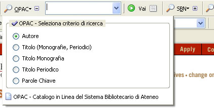

May 30, 2005
More Library Toolbars
Last week I posted a screencast on the features supported by the Jackson Library Toolbar.
Since then, I've discovered this Firefox Library Extensions, which pointed me in the direction of a couple more exciting toolbars:
- the HALBar Toolbar, and
- the Maldura Library Toolbar.
When I'm back on a machine with Camtasia installed on it, I'll do another toolbar feature screencast looking at these extensions, but for now you'll have to make do with a screenshot (that also includes my first attempt at an OU Library Toolbar [top] along with the MyAthens toolbar [bottom]) and a brief description:

So - very briefly then, what's on offer?
At the top of the screenshot, my OU Library toolbar provides a drop down list of homepages, the search box, a drop down list of which catalgue to search, a button that uses the textbox search term to search directly on the OU Voyager catalogue, a Library Lookup shortcut, a shortcut to Librarians on Call and a shortcut to My Library Record. (This is not too dissimilar to the Jackson Library Toolbar.)
The HALBar provides a set of shortcuts to various homepages, a drop down list of available catalogues, followed by a second drop down list of searches (keyword, title, ISBN, and so on) and then the search textbox. This simple design allows you to offer a semblance of semi-advanced search on the catalogues in quite an efficient way.
The Maldura Library Toolbar is one of the most sophisticated search toolbars I've seen to date, at least in its use of widgets!
A series of info pages (including a pop-up toolbar preferences window) are followed by a couple of menus containing homepage shortcuts. This is followed by a series of different catalogue searches. Each one allows you to search on one of a variety of search fields (tile, author, etc.) via a search menu:

It is also possible to highlight the search term within the results page.
Finally, the MyAthens toolbar provides access to journals and databases through the Athens Authentication service: a dropdown list identifies titles that your Athens subscription entitles you access to.
One facility not offered by any of the toolbars is that provided by the OpenURL Referrer for Google Scholar. This extension adds a link from a Google Scholar results page to an OepnURL resolver (so the electronic text version of a journal paper, for example, may be linked to from the results page).
And one extension I haven't seen yet, but that shouldn't be too hard to implement, would provide a link from an ISBN to a copy of the book (if it has been scanned in/uploaded yet) on Google Print.
All the toolbars described offer overlapping functionality, though with some differences in terms of usability/layout. Non-toolbar extensions too offer functionality that could be included as partof a library toolbar extension.
Several questions now occur to me:
- what functionality should a library toolbar include?
- to what extent should the toolbar be customisable by the user in terms of layout and/or functionality?
- to what extent would a generic toolbar - customisable by a user for searches on a particular library - be useful?
- to what extent would a generic toolbar - customisable by a library IT specialist for searches on a particular library, and redistributed by the library itself - be useful?
All comments, thoughts and Trackbacks on this topic will be much appreciated...
May 28, 2005
Making the Most of the OU ePrints Repository
Just a quick post this one...
The OU Library e-prints repository is still taking its first faltering steps. Hopefully over time it will come to be used as a matter of course for lodging electronic versions of published academic papers produced by OU researchers.
If you're a researcher with published papers, or 'research administrator' of one of the OU's Research Centres, and not sure what this new fangled repository thing is, check out the Library ePrint Info Page or this useful piece on Questions and answers about opening up access to research results
produced by JISC.
May 27, 2005
Scalability and the Long Tail
Sometimes I come across a blog posting that threatens to fire off a whole stream of thoughts, if only I could dedicate the mental time and energy it possibly deserves. The Long Tail: Eric Schmidt, Longtailer is one such post - I came across it a couple of weeks ago, and the idea of the Long Tail articulated there resonated with something I'd been backburner thinking about for some time - who do signs up to OU courses?
To set the scene, the long tail refers to a statistical distribution in which a small population of events occur very often, but the majority of event happen infrequently - that is, in the long tail.
Sometimes the OU might broker a significant deal with a large institution or company, such as the OU and the NHS, or the services brokered by OU Worldwide. These low frequency events, or partnerships, typically have a high payoff in terms of student recruitment from a single source.
Far more typical, however, are individual students who sign up for OU courses. And here, perhaps, is where the idea of the long tail perhaps comes into play. Consider the number of students who sign up for a degree (6 to 12 assessed courses) with the intention of completing it in 6 years say. Or the number of students who just sign up for one or two particular courses arising from a CPD need, or ineterest even. Some of these students want to be assessed, but a significant percentage don't. Then there are the short courses, which are assessed, and OU study packs, which aren't.
Just how the students taking this increasingly 'informal' study options are distributed I'm not sure, but I'm sure there are curves to describe the situation...
And so the long tail perhaps describes a large market, if we can cater for it. Look back at Google:
If you look at the advertiser, the market we're in, how do we do from the largest companies - Wal-Mart - in the world, all the way down to the smallest companies in the world, the single individual. We call this The Long Tail...We looked at this and we said, we've been doing really well up until now in the middle part of this. Well-run, mid-sized businesses, smart people solving interesting problems. But how well do we do against the problems of the very largest customers?
And what about the individual contributor, the small business, the company where Joe or Bob is the CEO, the CIO, the CFO and the worker and the support person--a one person company, a two-person company, a three-person company?
The NHS deals - they're like Google's Wal-Mart clients. The middle tier customers - they buy degrees. But what about the little guys - buying a single study pack, or a short course or two. Do we consider them 'core business'?
[Another way at looking a the long tail is to consider degree and course registrations in turns of volume (I could look this stuff up, but to post it here would perhaps breach a 'commercial confidence'?!), and to look at how this is changing over time (in fact, I'n not so sure the long tail thinking would apply here...)]
One area I'm particulary interested in is outreach - getting people involved in a learning journey that starts with really informal learning, such as museum visits and attending the theatre, or a science festivals. This population can form a realllllllllllllly long tail I think - but how do we cater for it?
One way may be to take significant chunks of OUr content open, and make it freely available on the web.
The OU did this for years with its broadcast material - did that do our core business harm? (Perhaps it did, in the sense that the brand people are still trying to get the OU away from the kipper tie, long hair and sandles confused academic look...Hmmm - perhaps that's why why they don't support our robotics outreach stuff ;-)
If the OU gets its revenue from selling qualifications, then giving the content away is not detracting from core business.
If students are just purchasing the content, then are we living a myth pretending to ourselves that degrees are our core business?
I beg to dream and differ from the hollow lies,
this is the dawning of the rest of our lives
Green Day, Holiday
May 26, 2005
T182 - One Step Too Far?
In a couple of earlier posts, (Open Content OU, Open Content Issues) I mentioned that a no longer presented course had been taken open by the Course Team. It seems this has not gone down too well with the powers that be:
WE'RE GOING OFFLINE FOR A BIT...
The Open University is currently reviewing its policy on the licensing of its teaching materials. Given the unparalleled range of those materials and the depth of its archive, this review has to address some complex issues and is taking some time to complete. (Our partner organisation, the BBC, conducted a similar review in relation to its Creative Archive project, and that took quite a while too!).
We've been asked to take this site offline until the Open University review is complete. We hope to be back soon, but in the meantime please bear with us.
The T182 material was originally posted under a Creative Commons license. I'm not clear whether it was released just before - or just after - the OU Creative Archive announcement, but a question that came to my mind immediately was whether the OU would be able to cope with a mixed economy of open licences - and whether it should?
What is clear, though, is that the system appears to be twitchy about the consequences of taking content open (please let me know if you see someone else hosting the T182 material! ;-) Talk about how we should take content open takes you so far, but when the content is actually out there, you are forced to think about it in a different way (i.e. for real, and not just as a thought experiment).
In my own mind I keep coming back to a set of questions that I posed when I first came back to the OU 6(?) years ago, and never received an answer:
What do we 'sell'?
Who do we sell it to?
Why do 'they' buy it?
These all impact on whether or not open sourcing our wares is a Good Thing (and whether it impacts on our "core business"). If you believe we sell content , it's possibly hard to defend. If you think we sell assessment, qualifications, structure/pacing, supported open learning/tutorial support, or even just membership of the OU community, then it's perhaps a different story?
PS So people can stay posted about progress on T182 et al., a mailing list has been set up for future announcements: Open-Feedback.
May 25, 2005
cf. the Jackson Library Toolbar
The Stanford Graduate School of Business: Jackson Library: FastJack toolbar is one of the more comprehensive library related toolbars I've found. It's also interesting from an OU point of view because the Jackson library use the same system as the OU Voyager system.
I was going to write a blog giving a tour of the features, but thought a screencast may do the job even better. So here it is (apologies for the poor audio quality): MyJack toolbar screencast.
May 23, 2005
OUseful Firefox Library Toolbar 0.1
A couple of days ago, I Scop[ed] an OU Library Firefox Toolbar, so here's just a quick post to blog the upload of my first attempt:
Download the script then File Open it, or drag it directly into, Firefox and it should install itself (though you'll have to close all open Firefox windows and restart it to actually see the benefit, as is commom to all Firefox extension installations).
It's not pretty - and it's not that clever, more of a testbed and play around with the sorts of things that are described in Jonah Bishop's Firefox Toolbar Tutorial.
I need to do some thinking about just what sort of thing can sensibly be included on a toolbar - just having a surrogate bookmark list is not making best use of the space, I think (though it does give an organisation a continued presence in the presence even if they're not at your site). Tools like the Library Lookup, which can be applied to lots of pages, are arguably more useful; and I guess login helpers cut out login hassle...
Anyway - more on that another time. Here's a quick overview of v0.1 of my OUseful Library Toolbar:
Searching...
By default, if you type something in the search bar and hit return it will be treated as a keyword search on the Voyager catalogue. Hitting the Voyager Search button is an alternative to hitting Return. You can also use the term as a keyword search on ROUTES - just select the ROUTES option from the drop down list by the Searches button.
The searches actually employ OUseful redirects - I always knew they'd come in handy!
Shortcuts
To the left of the text box is a drop down menu that provides links to the OU Library, Voyager catalogue and ROUTES homepages.
The Librarians on Call button takes you through to that service (though I'm not sure if the URL is a persistent one...?),
If you click on the Library Lookup button when you are looking at a particular book in Amazon, you can see if it's in the OU Library catalogue...:-)
To Do
Very obvious things on the to do list are:
- rewrite the code so it's not so obviously ripped, cut and pasted from the tutorial...
- more (and neater!) graphics on the toolbar;
- better layout;
- fix the drop down history list in the search text box;
- preferences for My Library Record and MyOpenLibrary;
- preferences for additional libraries to Lookup;
- town/postcode search for local, OU affiliated libraries, with route planning info based on user preferences (e.g. home/work postcode);
- work out how to pull an RSS feed equivalent from a search into a Live Bookmark like menu;
- generate an RSS feed by scraping My Library Record, so it can be fed into a Live Bookmark.
Shame I have no time to play on this again now for at least a fortnight :-(
May 21, 2005
Scoping an OU Library Firefox Toolbar
Having blogged about adding the OU Voyager library catalogue as a Firefox search option, I started reflecting on the other library tools and services I've doodled with in the past, with a view to scoping out what might go in to an OU Library toolbar. So what follows is a short, incomplete, and time-hopping history, followed by some thoughts on what I'm going to put into my first Firefox toolbar...
Way back when, before I got my head round Firefox extensions, I tried to simplify the way I accessed the OU library catalogue by setting up the URL rewrite:
http://ouseful.open.ac.uk/library/keyword
to search the OU voyager library catalogue for a particular keyword.
(By the by, here's the Apache snippet that does the rewriting:
RewriteRule library/(.*) http://voyager.open.ac.uk/cgi-bin/Pwebrecon.cgi?Search_Arg=$1&Search_Code=FT*&CNT=22 . If you want to know more about the make up of the actual search URL, I blogged about it here: Hacking Voyager URIs. If the whole concept of URL rewriting is new to you, then check out this posting by Russ Shannon on URL Rewriting.)
I seem to remember the actual rewrite was inspired by Jon Udell's Library Lookup bookmarklet which lets you look up a book in your local library if its ISBN appears in the URL of the web page you're looking at (as it does, for example, when you are looking at a book on Amazon). For your covenience, here's a copy of the OU Library lookup bookmarklet if you don't already have it: OU Library Lookup Bookmarklet. Just drag the link onto your bookmark toolbar, then clck it when you're looking at a book on Amazon, for example...
- ROUTES RSS feed, which can be used as the basis for a Firefox Live Bookmark;
- OU Resolver Google Scholar extension which adds OpenURL 0.1 buttons to the results of a search in Google Scholar (based on an orginal extension written by Peter Binkley and simnce largely superceded by the much more usable OpenURL Referrer for Google Scholar.
In addition, there are quite a few other library related add-ins for Firefox floating around in the wild, such as the Athens toolbar (tell me more...).
Elsewhere, the FastJack: My Library Toolbar from Jackson Library, Stanford, doesn't appear to have made it out in the wild (yet...) for Firefox looks pretty useful and perhaps suggests some functionality for an OU Library toolbar...
So - what's on my wish list for just such a thing that is short term achievable (i.e. I more or less know how to do it already...;-):
- catalogue keyword (at least) search (Voyager, ROUTES);
- OU targetted OpenURL markup added into Google Scholar results;
- MyAthens toolbar functionality included;
- OU Library Lookup bookmarklet;
- automatic sign in to MyOpenLibrary.
It would also be cool if the results of a ROUTES search (e.g. via the RSS feed generated from my OUseful ROUTES search) could also be fed into a live bookmark menu :-).
More thoughts will foloow, perhaps in a post with version 0.1 of the toolbar :-)
PS [note to self] - build a tool that makes looking up libraries near me easier to use, e.g. by town or postcode search, or by checking out a cookie (or even MyOpenLibrary preferences...).
May 20, 2005
OU Firefox Search Plugins
Some people, it seems, just don't get Firefox... Presumably they didn't get the idea of Mosaic when it came out either, and steadfastly refused to use any search client other than Veronica. I can just imagine them arguing instead that gopher would never be replaced by fly-by-night protocols such as http, for example...
Anyway...one of the reasons I like Firefox is that it allows me to muck around with the browser, as well as the web pages. As soon as I get my head round writing XUL plugins, I'll have a go at an OU Firefox toolbar... But that'll take a bit of learning time, I think, so here's something simple to start with - a couple of plugins to the Firefox search tool.
The Firefox search tool provides a text box that allows you to fire off a query to your search engine of choice. The default is probably Google:

You'll also notice that you can add alternative search engines as the focus of your search. The Mycroft project has dozens of examples (though not the OU - yet ;-)
The Mycroft site also provides a wealth of information about getting started with writing Firefox search tool extensions, so I thought I'd knock a couple up that link into the OU search engine andf the OU LIbrary catalogue. And here they are:
- Open University Search Engine
- Open University Library Catalogue
If you follow either of the above links in Firefox, you should be offered the chance to add the corresponding search engine to the list... However, the plugin may not appear until you shut Firefox dwon and then restart it...
Next stop - an OU toolbar (or should that be tOUlbar?! ;-)
Update 20/5/05
Another search plugin - Open University Knowledge Network (Public Site)
May 14, 2005
Who's Saying What About the OU?
One of the ways that blogs and tags are influencing organisations who are aware of them is that some of the people who rant about, and some of the people who praise up, a particular company or service do so in public...
...which is why some web aware organisations keep an eye on the blogosphere (and tagosphere?!) to see what's being said about them....
So what's being said about the OU? Want to see?
You can easily search the Technorati site directly, or create a permalink to Technorati search Technorati for posts about www.open.ac.uk.
It's also possible to set up a watchlist that keeps track of new posts to Technorati on the subject of your search, and makes them available via an RSS feed.
So - I set up a watchlist for the OU main page, collected the RSS feed address, and now present it here for your delectation and delight... (Note that the content below is taken from a live feed on Technorati, so it is subject to change and out of my control...)
May 07, 2005
Hacking Voyager URIs
In a previous post (Embedding RSS Search...), I described a screenscraper for the OU Voyager library catalogue that produces an RSS feed of the search results.
The scraper was very crude and gave a fixed number of search results, which (as the someone in the Library pointed out!) was all a bit contrived. As indeed it was....
So here's a new Voyager catalogue scraper that allows you to decide how many search items you want reporting, 3 in this case from a keyword search on technology:
http://ouseful.open.ac.uk/OUVoyagerScraperRSSNum.php?q=technology&num=3
It's quite refeshing that the screenscraper accpets limited compound search queries, for example on multiple keywords such as technology+internet
But that's not really the point of this post. What I wanted to log here was a few things I've found out about how to construct Voyager queries in the address line.
A bit of playing with the standard Voyager catalogue search interface can be used to generate URIs to search result forms very easily, but reverse engineering the switches can be a laborious task. Picking apart the web form to see how queries are in principle constructed is another possibility (I generally use the Firefox web developer toolbar Forms tools for this sort of forensic activity) but again, it can be time consuming.
Tinkering around with the form led to a couple of interesting constructions, such as:
- class mark search, e.g. http://voyager.open.ac.uk/cgi-bin/Pwebrecon.cgi?SC=CallNumber&SA=6.31
- ISBN search, e.g. http://voyager.open.ac.uk/cgi-bin/Pwebrecon.cgi?DB=local&Search_Arg=0849304563&Search_Code=ISBN&CNT=50
With a bit of playing, it's easy to see what some of the switches do, and how they can be added to other searches.
For example, it's easy enough to work out that adding CNT=nn limits the number of search results returned to a maximum of nn.
If you want to tinker with te URIs generated from the web form search, here are a coupleof pointers to making apersistent URI (the ones automatically generated in response to making a query through the web form are often littered with session information):
a) Edit the URL to remove the information beginning with PID. The PID, SEQ, and HIST numbers identify the search as belonging to a specific user session. Leaving them in will get you a time-out message rather than search results.
b) Add "DB=local&CNT=25" (or CNT=10, or whatever) to the end of your URL. This tells the computer which database to search and how many hits to display.
Here are a couple of queries I managed to deconstruct. The v1/v2 switch changes the reporting level (setting vn=0 is the same as not including it) and SID=1 appears to do the same job as DB=local:
http://voyager.open.ac.uk/cgi-bin/Pwebrecon.cgi?v2=1&Search_Arg=0849304563&Search_Code=ISBN&CNT=10&SID=1
http://voyager.open.ac.uk/cgi-bin/Pwebrecon.cgi?v1=1&Search_Arg=0849304563&Search_Code=ISBN&CNT=5&DB=local
There comes a point in playing, though, when sometimes you just want to cheat and look up what a particular switch does without having to try all the options. And this guide to URL-Launched Searches in ILLINET Online in WebVoyage does the job admirably.
The makers of Voyager also produce guidance, I think, but I haven't been able to see it... I do have a URL though (Voyager crib sheet), so if anybody can get me a copy of the actual document, I'd be very grateful :-)
May 04, 2005
Online Courses - ePhemeral or Persistent?
With the OU presenting more and more courses online, the question of whether - or how - to allow students continued access to the course materials after the course has finished is increasingly likely to become "an issue".
At the current time, I believe that courses presented largely online - such as those on the Technology Short Course Programme - remain accessible to students for a matter of weeks after the official end date of the course, but then access is denied in the longer term.
This is potentially problematic in a several ways. For example, it's not just students following a longer programme of study such as a certificate or degree that do not have a resource they can refer back to... However, those continuing students in particular are essentially being denied a resource by the OU, and that was originally offered by the OU, [and] that may support their future studies.
Institutionally, I am not sure how electronic courses are archived from one presentation to anothe. Print material is electronically archived each time a revised edition is printed, but the same archiving process does not appear as yet to be provided for electronically presented courses.
[Managing digital assets in general appears to be fragmented, with print materials being archived in electronic form in one system well known to course manageers, software and web interactives in another well known to LTS developers, and so on. The OU library increasingly provides access to digital assets, with subject librarians being a key point of contact when trying to identify relevant resources for new courses. With courses increasingly blending the format of resources used to deliver the course, just knowing where potential assets are likely to be found is not necessarily straightforward!]
Providing continued access to electronic, web-delivered course materials - and providing persistent URLs to those materials - should be on the agenda. Ideally, URLs should uniquely identify the reosource they address.
Identifying a course with a memorable - and simple - URL such as http://courses.open.ac.uk/t183 may appear attractive at first site, but it raises several issues....
If the URL identifies a single resource, then what happens for overlapping presentations of T183? This would not be a problem if the course site were static, but there are various dynamic elements to most online sites - scheduled reveals of course material, presentation specific assessment materials, and news from the course team, for example.
In the above example of T183, the simple URL actually redirects to something a little more complex once SAMS authentication is negotiated, but again there is nothing to uniquely identify the presentaion code of the course, or potentially a student's personalised version of it, in the URL. It may be the case, of course, that while the URL is common for all users, the content is different - tuned by the SAMS ID used to log in to the site - but this potentially wreaks havoc in the case of a student asking e.g. a member of the CT - or even someone on the help desk - for clarification about an item on a particular page...
Getting persistent URLs right potentially solves several problems, then:
1) If the persistent URL points to a persistent site, with content frozen at the end of a presentation, legacy presented material is implicitly archived.
2) Persistent URLs provide an opportunity for students to retain access to the course materials.
If persistence is not desired, however, what other ways might we support students? One way of allowing students continued access is to provide them with a downloadable - or CD-ROM/DVD-ROM based - archive of a static version of the course materials. Many students effectively do this anyway, saving each page on their own machine, although navigation frequently breaks unless the student uses a site ripping tool to download the site in one go and preserve the relative links.
Another opportunity that may potentially allow students to retain access to a site lies in 'personal web' archives, such as Furl or Yahoo MyWeb (follow the MyWeb BETA link). This sites allows users to save copies of web pages they have visited, although I'm not clear about the extent to which they can copy firewalled pages.
The Personal Web model offers another possible model for allowing students continued access to electronic resources. Students registered with the OU could be provided with a personal web disk quota. This space could be used to archive copies of OU hosted materials, and potentially materials from othr providers.
Two obvious issues arise relating to saving material from offsite sources of course - copyright, and propriety. These issues may be addressed to a limited extent by only allowing students to archive material from whitelisted sites, such as those accessed through the library, or cited in course materials.
The fact that online courses deny students to recoup a fractional part of the cost of the course through selling course materials on (for example, through University Book Search) is not going to be altered by providing persistent availability to the course, however!
May 02, 2005
Managing Bookmarks
With an increasing number of OU courses referring to websites outside the OU, and increasingly information literate students who are bookmarking websites related to a course but discovered by themselves, bookmark management is potentially one area of value added service that an eOU could be supporting.
Another collection of bookmarks is maintained by the OU Library Resources for Open University TEachers and Students (ROUTES) service, which "provid[es] access to selected quality-assessed Internet resources for Open University courses. Resources are selected by course teams and the Library's Information Specialists."
Just how students are expected to use links to external websites in their study is still open to debate. Many links are embedded in the body of course material, and not necessarily repeated in a bibliography. Students may or may not be online when they come across the links, for example, if they are working offline from a course CD-ROM or captured version of the website, or indeed from printed versions of electronic course materials. I discussed some of these issues, and more, some time ago in the Web Bookmarks section of my now deprecated Micro- and Appropriate Format Information Services webpage.
One way of providing links to students is to supply them with an additional bookmark folder that they can inport into their own browser. As OU course materials will be increasingly written in a structured format using XML, extraction of external links from the body of course materials can be readily automated through XSL transformations. Bookmark files customised for student's preferred browsers can easily be achieved, providing students with an ordered set of bookmarks orgainsed in folders relating to Study Guide chapters for example. Having a list of external links is also useful in website management terms, as it simplifies the process of link liveness checking.
For enlightened students using the Firefox browser, Live Bookmarks can directly feed bookmarks to the student's browser via an RSS feed.
If we accept that link management is likely to become a significant issue for an increasingly online University, then now is perhaps an appropriate time to consider ways of managing this area. The risie in popularity of social bookmarking suggests one possible way forward.
One of the most popular social bookmarking tools is del.icio.us. This web-based tool allows individuals to save personal bookmarks and associate them with one of more tags that are meaningful to the user. Bookmarks from other users sharing the same tag can be readily explored, and the number of other users who have bookmarked the same site can also be inspected (useful when rating the quality of a site).
Course teams could easily provide an official list of bookmarks for a particular course, tageed with the course code (such as http://del.icio.us/psychemedia/t184), and perhaps the study guide chapter, as well as with more content directed labels.
Students could also use the tool to bookmark sites they have found. This would potentially provide a useful form of research for course teams considering updates to course material, for example, or interested into what sorts of sites the students are particulalry looking for to supplement their studies. For example, if a significant number of students bookmarked a particular tutorial site, it might suggest to the CT that the exposition of a particular topic was lacking in some respect. Augmenting the tool with a Rate this link feature would also provide useful feedback to the CT, particularly with respect to the perceived usefulness or relevance of links provided by the CT in the formal content of the course to the students.
At the current time, del.icio.us is a free service supported by a single individual using closed source code. As such, it is probably not appropriate for use a an integral part of an OU course. Building a social bookmarking environemnt from scratch is not too major a challenge and as such an OU social bookmarking facility could be constructed without too much effort. However, it's always easier to start from soemthing than nothing, and the de.lirio.us open source del.icio.us clone could be one such starting point.
Update (20/5/05):
I have started adding week-by-week bookmarks to del.icio.us for T184 (Chapter 1, Chapter 2). More to follow...
May 01, 2005
Open Content Issues
My original post on the Open Content OU, describing the recent announcement that the OU had joined with the BBC and others in promising to open up content in a Creative Commons style license went little further that just reporting that fact. It also omitted to mention a third way of opening up content, specifically in the form of "taster" material.
Many book publishers offer sample chapters from their books as a taster, and the OU is no different, on some courses at least. The Technology Short Course T184 offers a sample 'chapter' from the TSCP Courses webpage, for example, although you'll notice that the link to the sample material does not appear on the main OU Courses and Qualifications page for T184.
There is also a not really a fourth way issue, and that's the release of copyrighted material in the form of research papers on academics' personal webpages. The position will perhaps be clarified as the OU library seeks to promote the Open University ePrints repository, which at the moment "is a pilot service which is being implemented by the Open University Library to evaluate the technical, procedural, strategic and legal issues involved in running an OU institutional ePrint service."
If you are new to the idea of ePrints, they are "electronic copies of academic papers. Universities world-wide are being encouraged to provide access to ePrints of their research output on institutional servers...".
There are many practical issues that are likely to arise from taking legacy content open, and this blog is just a signpost to a future post that will introduce them - and consider them (and more) in detail - at some later time...
Uppermost are potentially issues relating to copyright of third party material and the time and expense involved in 'cleaning' the material for open release. In the T184 taster materials, copyrighted images not licensed for use outside 'student purchased course use' are blanked out, as this T184 sample material screenshot shows.
This potentially has a lot to do with more general issues of reuse, and as such an Open Content migration strategy may well be able to learn from CURVE: CoUrse Reuse & VErsioning. The findings of CURVE are potentially even more relevant for planning the format and structure of future materials which may be relased under an open license following a period of closed, commercial use, for example.
Many of the licensing issues are covered in a report I found on the intranet dated Match, 2005, produced by Richard McCracken, Head of Intellectual Property for VCE: Open Access and Open Source and the Open University. The extent to which I pull out particular elements of this OU-SAMS protected document for comment on this public blog is something I shall consider over the coming weeks...
I'm not sure of the extent to which that document drew on what seems to have been the subject of a 'workshop' on the OU and open content held presumably at the VC's forum in November, 2004, if the URL provenance and document date on this informal report on a series of small group discussions on Open Source and the OU Model: What can the OU contribute; What would be of value to the OU?: Flipchart Output
is anything to go by.